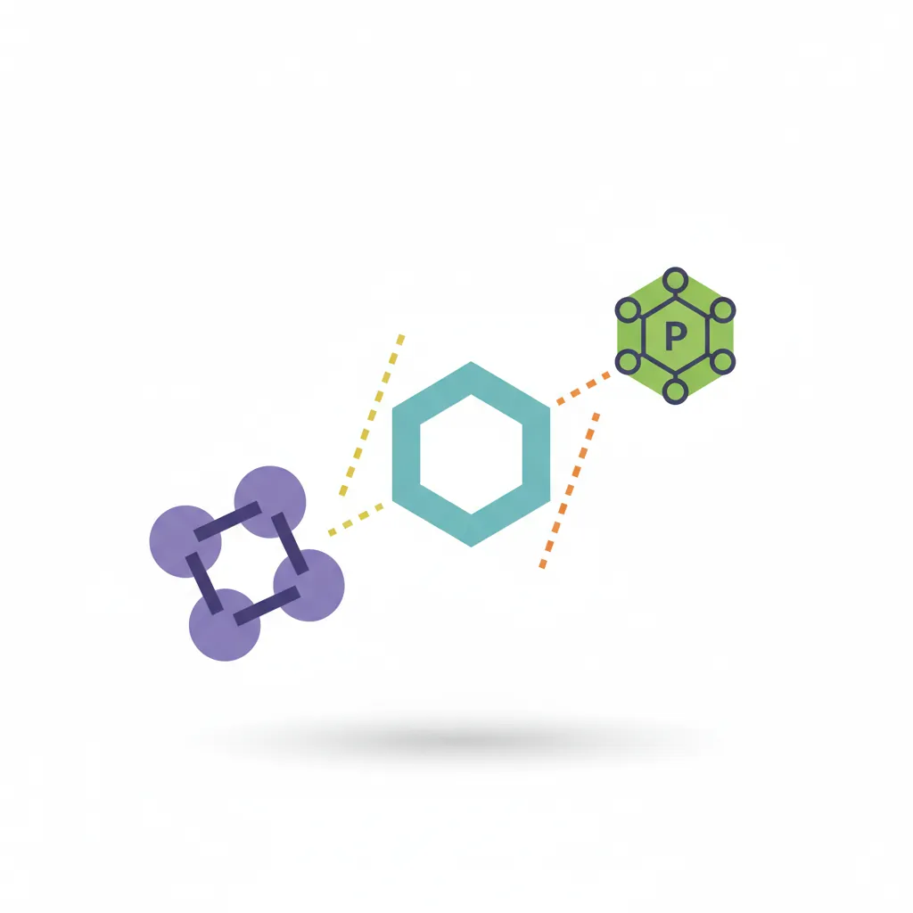
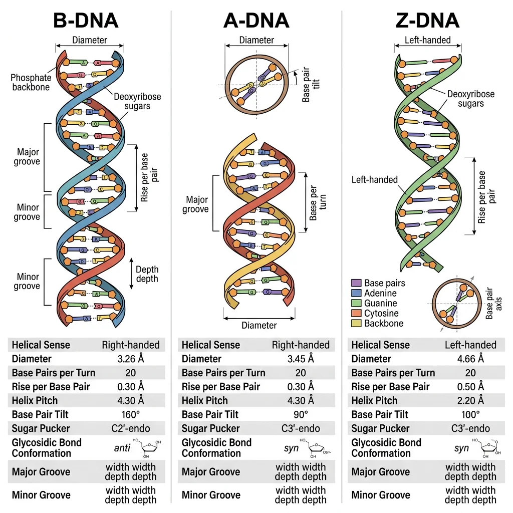
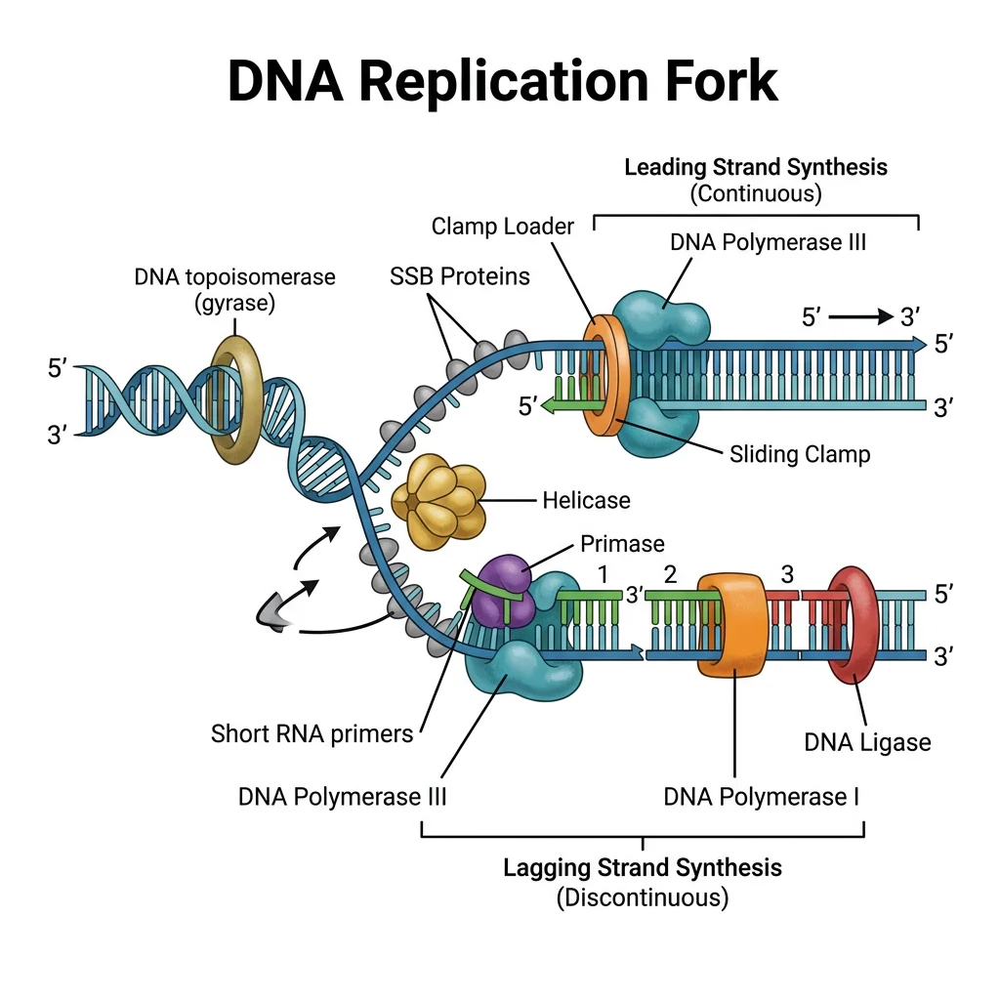
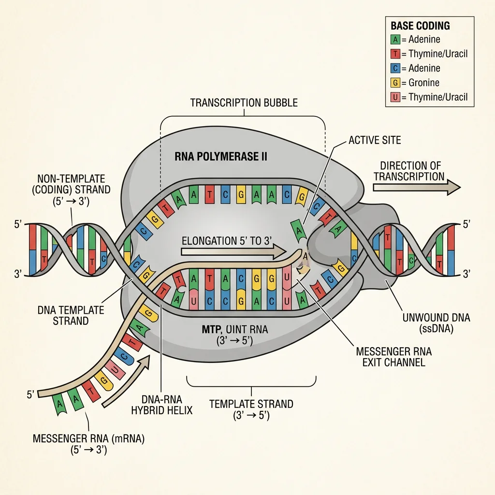
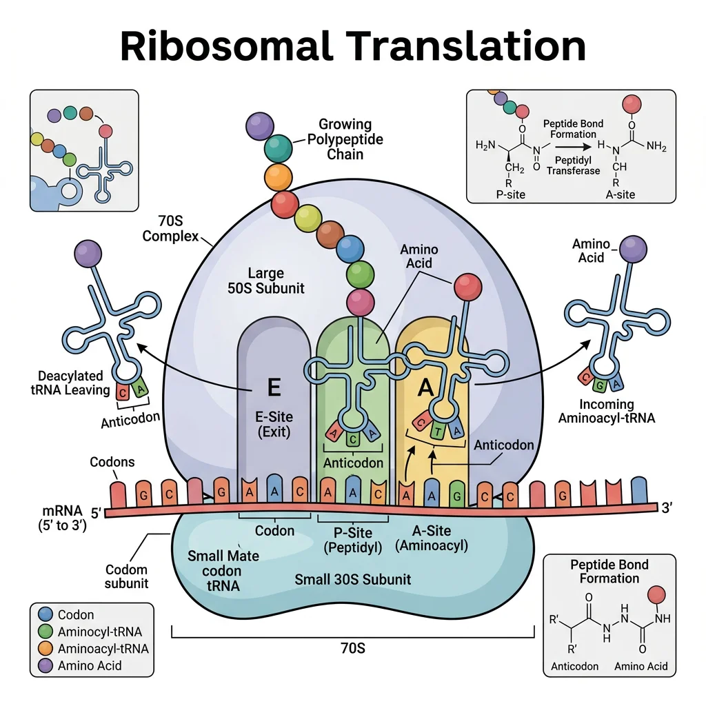
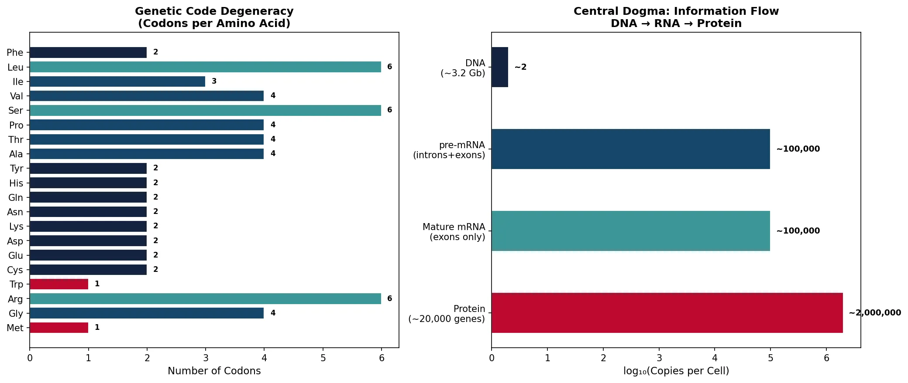
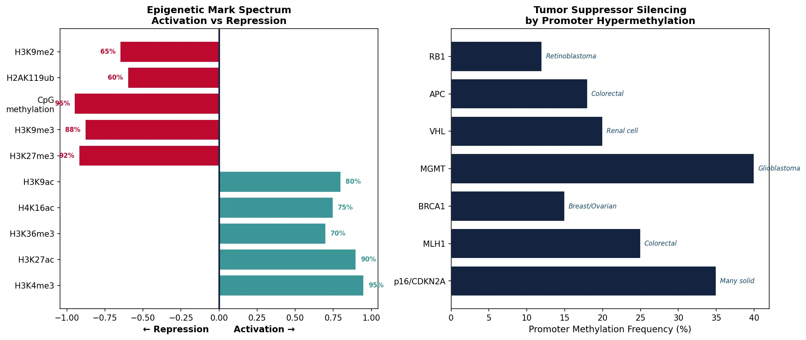

Biochemistry Mastery
Biological Chemistry Fundamentals
Atoms, bonds, functional groups, thermodynamicsWater, pH & Biological Buffers
Water polarity, pH, Henderson-Hasselbalch, blood buffersAmino Acids & Protein Structure
Amino acid classes, peptide bonds, protein foldingEnzymes & Catalysis
Kinetics, Michaelis-Menten, inhibition, regulationCarbohydrates & Lipids
Sugars, glycogen, fatty acids, cholesterol, membranesMetabolism & Bioenergetics
ATP, glycolysis, gluconeogenesis, redox carriersCitric Acid Cycle & Oxidative Phosphorylation
Acetyl-CoA, ETC, ATP synthase, oxygen dependenceSignal Transduction & Cell Communication
GPCRs, kinases, calcium, hormone cascadesNucleic Acids & Gene Expression
DNA, replication, transcription, translation, epigeneticsBrain & Nervous System Biochemistry
Neurotransmitters, ion gradients, myelin, neurodegenerationHeart & Muscle Biochemistry
Cardiac metabolism, actin-myosin, energy systemsLiver Biochemistry
Glucose homeostasis, detox, urea cycle, bileKidney Biochemistry & Acid-Base
pH regulation, ion transport, hormonal functionsEndocrine System Biochemistry
Hormone classes, signaling, glucose & stress controlDigestive System Biochemistry
Gastric acid, enzymes, bile, absorption, microbiomeImmune System Biochemistry
Antibodies, cytokines, complement, oxidative burstAdipose Tissue & Energy Balance
Triglycerides, lipolysis, leptin, obesityTissue-Specific Metabolism
Fed vs fasting, organ fuel selection, starvationMolecular Basis of Disease
Diabetes, cancer metabolism, neurodegenerationClinical Biochemistry & Diagnostics
Blood tests, liver/kidney markers, lipid panelsNucleotide Chemistry
Nucleotides are the monomeric building blocks of DNA and RNA, but they also serve as energy carriers (ATP, GTP), signaling molecules (cAMP, cGMP), and coenzyme components (NAD⁺, FAD, CoA). Each nucleotide consists of three parts: a nitrogenous base, a pentose sugar (ribose in RNA, deoxyribose in DNA), and one or more phosphate groups.

Nucleotide = Base + Sugar + Phosphate
Base alone = nucleobase (adenine, guanine, cytosine, thymine, uracil)
Base + Sugar = nucleoside (adenosine, guanosine, cytidine, thymidine, uridine)
Base + Sugar + Phosphate = nucleotide (AMP, GMP, CMP, TMP, UMP)
Adding more phosphates: AMP → ADP → ATP (each phosphoanhydride bond stores ~30.5 kJ/mol)
Purines vs Pyrimidines
The five nucleobases fall into two structural families based on their ring systems:
| Property | Purines (A, G) | Pyrimidines (C, T, U) |
|---|---|---|
| Ring structure | Double ring (fused imidazole + pyrimidine) — 9 atoms | Single ring (6-membered) — 6 atoms |
| Members (DNA) | Adenine (A), Guanine (G) | Cytosine (C), Thymine (T) |
| Members (RNA) | Adenine (A), Guanine (G) | Cytosine (C), Uracil (U) — replaces T |
| Size | Larger (MW ~135-151 Da) | Smaller (MW ~111-126 Da) |
| Synthesis pathway | Built on ribose-5-phosphate scaffold (de novo) — 10+ steps, requires glutamine, glycine, aspartate, CO₂, folate | Ring built first, then attached to ribose — 6 steps from carbamoyl phosphate + aspartate |
| Degradation product | Uric acid (gout when excess) | β-Alanine, β-aminoisobutyrate (soluble, easily excreted) |
Clinical Connection: Gout & Purine Metabolism
Gout results from excess uric acid (the end product of purine degradation in humans). Unlike most mammals, humans lack uricase — the enzyme that converts uric acid to the more soluble allantoin. When blood uric acid exceeds ~6.8 mg/dL, monosodium urate crystals deposit in joints (especially the big toe), triggering an inflammatory response. Allopurinol treats gout by inhibiting xanthine oxidase (the enzyme that converts hypoxanthine → xanthine → uric acid). Lesch-Nyhan syndrome — deficiency of HGPRT (purine salvage enzyme) → massive uric acid overproduction + devastating neurological symptoms (self-injury, dystonia) in boys.
Base Pairing Rules
The specificity of genetic information storage depends on Watson-Crick base pairing — hydrogen bonds between complementary bases on opposite strands:
Chargaff's Rules & Base Pairing
A = T (adenine pairs with thymine via 2 hydrogen bonds)
G ≡ C (guanine pairs with cytosine via 3 hydrogen bonds)
Chargaff's ratios: In any DNA, [A] = [T] and [G] = [C], therefore [A+G] = [T+C] (purines = pyrimidines)
Clinical importance: GC-rich regions are more thermally stable (higher melting temperature, Tₘ) because G≡C has 3 H-bonds vs A=T's 2. Organisms living at high temperatures (thermophiles) have GC-rich genomes.
DNA Double Helix Architecture
In 1953, James Watson and Francis Crick proposed the double helix model of DNA — arguably the most important structural discovery in the history of biology. Their model was built upon X-ray diffraction data from Rosalind Franklin (Photo 51) and chemical analysis by Erwin Chargaff.

Watson, Crick & the Double Helix
James Watson and Francis Crick (Cambridge, 1953) combined Chargaff's base-pairing ratios with Rosalind Franklin's X-ray diffraction pattern to deduce that DNA is a right-handed double helix with bases on the inside and sugar-phosphate backbones on the outside. Their famous one-page paper in Nature (April 25, 1953) concluded with one of science's greatest understatements: "It has not escaped our notice that the specific pairing we have postulated immediately suggests a possible copying mechanism for the genetic material." Watson, Crick, and Maurice Wilkins shared the 1962 Nobel Prize in Physiology or Medicine. Franklin died of ovarian cancer in 1958, possibly related to X-ray exposure, and was not awarded the prize.
| Feature | B-DNA (Standard) | A-DNA | Z-DNA |
|---|---|---|---|
| Helix direction | Right-handed | Right-handed | Left-handed |
| Base pairs per turn | 10.5 | 11 | 12 |
| Helix diameter | 20 Å (2.0 nm) | 26 Å | 18 Å |
| Rise per bp | 3.4 Å | 2.6 Å | 3.7 Å |
| Conditions | Physiological (aqueous, moderate salt) | Dehydrated; RNA-DNA hybrids | High salt; alternating purine-pyrimidine sequences |
| Major groove | Wide, accessible (protein recognition) | Deep, narrow | Flat (barely exists) |
DNA by the Numbers
Human genome: ~3.2 billion base pairs, ~2 meters of DNA per cell, packed into a nucleus only ~6 μm in diameter — a compaction ratio of ~10,000:1. This is achieved through hierarchical packaging: DNA → nucleosome (147 bp wrapped around histone octamer) → 30 nm fiber → chromatin loops → chromosomes. If all the DNA in your body's ~37 trillion cells were laid end to end, it would stretch to the Sun and back ~600 times.
Supercoiling & Topoisomerases
Circular DNA (bacteria, mitochondria) and constrained DNA loops in eukaryotes develop supercoils — additional twisting of the double helix axis. Negative supercoiling (underwinding) facilitates strand separation for replication and transcription. Topoisomerases manage supercoiling:
- Topoisomerase I: Cuts one strand, relieves tension, re-ligates — no ATP needed. Drug target: camptothecin (cancer chemotherapy)
- Topoisomerase II (DNA gyrase in bacteria): Cuts both strands, passes another segment through, re-ligates — requires ATP. Drug targets: fluoroquinolones (antibiotics: ciprofloxacin, levofloxacin) target bacterial gyrase; etoposide (cancer) targets human topo II
DNA Replication
DNA replication is a semiconservative process — each daughter DNA molecule contains one original (template) strand and one newly synthesized strand. This was proven by the elegant Meselson-Stahl experiment (1958), often called "the most beautiful experiment in biology."

flowchart TD
ORI["Origin of Replication
ORC binds, helicase loaded"]
UNWIND["Helicase Unwinds
Double helix → Replication fork"]
SSB["SSB Proteins
Stabilize single strands"]
ORI --> UNWIND --> SSB
SSB --> LEAD["Leading Strand
Continuous synthesis
5' → 3' toward fork"]
SSB --> LAG["Lagging Strand
Discontinuous synthesis
5' → 3' away from fork"]
LEAD --> POL3_L["DNA Pol III
Synthesizes continuously"]
LAG --> PRIM["Primase
RNA primers"]
PRIM --> POL3_G["DNA Pol III
Okazaki fragments"]
POL3_G --> POL1["DNA Pol I
Replace RNA → DNA"]
POL1 --> LIG["DNA Ligase
Join fragments"]
style ORI fill:#132440,stroke:#132440,color:#fff
style LEAD fill:#e8f4f4,stroke:#3B9797
style LAG fill:#f0f4f8,stroke:#16476A
Meselson & Stahl: The Most Beautiful Experiment
Matthew Meselson and Franklin Stahl (Caltech, 1958) grew E. coli in medium containing heavy nitrogen (¹⁵N) until all DNA was "heavy." They then switched to ¹⁴N (light) medium and sampled DNA at each generation. Using CsCl density-gradient centrifugation, they observed: Generation 1 → all DNA at intermediate density (one heavy + one light strand); Generation 2 → half intermediate, half light. This definitively proved semiconservative replication, ruling out conservative and dispersive models.
Origin Firing & the Replication Fork
Replication begins at origins of replication — specific DNA sequences where the double helix is unwound to create a replication bubble with two diverging replication forks:
- E. coli: Single origin (oriC, 245 bp) — entire 4.6 Mb genome replicated in ~40 minutes
- Human: ~30,000-50,000 origins — entire 3.2 Gb genome replicated in ~8 hours (S phase). Multiple origins fire simultaneously for speed
The Replisome: A Molecular Machine
Helicase (DnaB in E. coli, MCM in eukaryotes): Unwinds double helix at the fork (~1,000 bp/sec in bacteria)
SSB proteins: Stabilize single-stranded DNA (prevent re-annealing and nuclease attack)
Primase (DnaG): Synthesizes short RNA primers (~10 nt) to provide 3'-OH for DNA polymerase
DNA Polymerase III (bacteria) / Pol ε and Pol δ (eukaryotes): Main replicative polymerase
Sliding clamp (β-clamp / PCNA): Tethers polymerase to DNA for processivity (~500,000 bp without falling off)
Topoisomerases: Relieve supercoiling ahead of the fork
DNA Polymerases
All DNA polymerases share a fundamental limitation: they can only synthesize DNA in the 5' → 3' direction and require a pre-existing primer with a free 3'-OH group. This creates the asymmetry between the leading strand (continuous synthesis toward the fork) and the lagging strand (discontinuous synthesis as Okazaki fragments, away from the fork).
| Polymerase | Organism | Function | Proofreading? | Speed (nt/sec) |
|---|---|---|---|---|
| Pol III | E. coli | Main replicative polymerase (both strands) | Yes (3'→5' exonuclease) | ~1,000 |
| Pol I | E. coli | Removes RNA primers, fills gaps (nick translation) | Yes (3'→5' and 5'→3') | ~20 |
| Pol ε (epsilon) | Eukaryotes | Leading strand synthesis | Yes | ~50 |
| Pol δ (delta) | Eukaryotes | Lagging strand synthesis + repair | Yes | ~30 |
| Pol α-primase | Eukaryotes | Primer synthesis (RNA + short DNA) | No | Low |
| Telomerase | Eukaryotes | Extends chromosome ends (reverse transcriptase) | No | Slow |
Proofreading & DNA Repair
DNA replication achieves extraordinary fidelity — approximately 1 error per 10⁹-10¹⁰ base pairs — through three layers of quality control:
Three Layers of Replication Fidelity
Layer 1 — Base selection: Polymerase active site geometrically selects correct Watson-Crick pair (error rate ~10⁻⁵)
Layer 2 — Proofreading: 3'→5' exonuclease activity removes misinserted bases immediately (improves 100-fold → ~10⁻⁷)
Layer 3 — Mismatch repair (MMR): Post-replication scanning by MutS/MutL (bacteria) or MSH/MLH (eukaryotes) corrects remaining errors (improves 100-fold → ~10⁻⁹ to 10⁻¹⁰)
Clinical Connection: Lynch Syndrome
Lynch syndrome (hereditary nonpolyposis colorectal cancer, HNPCC) is caused by germline mutations in mismatch repair genes (MLH1, MSH2, MSH6, PMS2). Without functional MMR, the mutation rate increases ~100–1,000-fold, leading to microsatellite instability (MSI) — characteristic expansion/contraction of short tandem repeats. Lynch syndrome accounts for ~3-5% of all colorectal cancers and increases lifetime risk of colorectal, endometrial, ovarian, and gastric cancers. MSI-high tumors respond well to immune checkpoint inhibitors (pembrolizumab) because their high mutation load generates many neoantigens.
Transcription
Transcription is the synthesis of RNA from a DNA template by RNA polymerase. Unlike DNA replication, transcription copies only one strand of a gene (the template/antisense strand), producing an RNA molecule identical in sequence to the coding/sense strand (except U replaces T). Transcription occurs in three phases: initiation, elongation, and termination.

| Feature | Prokaryotic Transcription | Eukaryotic Transcription |
|---|---|---|
| RNA polymerase | Single enzyme (α₂ββ'ω core + σ factor) | Three: RNA Pol I (rRNA), Pol II (mRNA), Pol III (tRNA, 5S rRNA) |
| Promoter recognition | σ factor binds -10 (Pribnow box: TATAAT) and -35 elements directly | General transcription factors (TFIID/TBP) bind TATA box (~-25); mediator complex |
| mRNA processing | None — mRNA is translated co-transcriptionally | 5' cap, splicing, 3' poly-A tail (in nucleus before export) |
| Coupling with translation | Yes — ribosomes attach to mRNA during transcription | No — transcription (nucleus) is separated from translation (cytoplasm) |
| Termination | Rho-dependent or Rho-independent (intrinsic hairpin) | Cleavage/polyadenylation signal → torpedo model |
Initiation: Finding the Gene
In eukaryotes, transcription initiation at Pol II promoters requires assembly of a pre-initiation complex (PIC) — a multi-protein machine of general transcription factors (GTFs):
- TFIID (contains TBP — TATA-binding protein): Recognizes TATA box, bends DNA ~80°
- TFIIA, TFIIB: Stabilize TBP-DNA complex, position Pol II
- TFIIF: Recruits Pol II to the promoter
- TFIIE, TFIIH: TFIIH has helicase activity (opens ~11 bp bubble) and kinase activity (phosphorylates Pol II CTD at Ser5 → promoter escape)
Elongation: Reading the Template
After promoter clearance, Pol II moves along the template at ~20-50 nt/sec (much slower than replication). The CTD (C-terminal domain) of Pol II's largest subunit — containing 52 repeats of YSPTSPS in humans — acts as a phosphorylation-dependent platform for recruiting processing factors (capping enzymes to Ser5-P, splicing factors to Ser2-P).
Termination
Eukaryotic Pol II termination is linked to 3' end processing. When Pol II transcribes past the polyadenylation signal (AAUAAA), cleavage factors cut the pre-mRNA ~20 nt downstream. The "torpedo" model explains termination: a 5'→3' exonuclease (Rat1/Xrn2) degrades the residual RNA still attached to Pol II, eventually "catching up" to the polymerase and causing dissociation.
mRNA Processing
Eukaryotic pre-mRNA undergoes three critical modifications in the nucleus before being exported to the cytoplasm for translation. These co-transcriptional and post-transcriptional modifications protect the mRNA from degradation, enable nuclear export, and ensure efficient translation.
5' Capping
A 7-methylguanosine (m⁷G) cap is added to the 5' end of the pre-mRNA via an unusual 5'-5' triphosphate linkage — within seconds of transcription initiation (when transcript is ~20-30 nt long). The cap is recognized by eIF4E (translation initiation factor), CBC (cap-binding complex, for nuclear export), and protects against 5'→3' exonucleases.
Splicing: Removing Introns
Introns (intervening sequences) are non-coding regions that must be precisely excised from pre-mRNA, while exons (expressed sequences) are ligated together. Human genes average ~8 introns, and some genes (like dystrophin) contain 78 introns spanning 2.3 Mb — yet the mature mRNA is only 14 kb!
The Spliceosome: A Ribozyme Machine
Splicing is performed by the spliceosome — a massive ribonucleoprotein complex (~4.8 MDa) consisting of 5 small nuclear RNAs (snRNAs: U1, U2, U4, U5, U6) and >100 proteins. It recognizes three critical intron sequences:
5' splice site: GU (almost invariant) — recognized by U1 snRNA
Branch point: Adenosine near 3' end of intron — recognized by U2 snRNA
3' splice site: AG (almost invariant) + polypyrimidine tract
The mechanism involves two transesterification reactions: (1) 2'-OH of branch-point A attacks 5' splice site → lariat intermediate; (2) Free 3'-OH of upstream exon attacks 3' splice site → exons joined, lariat released.
Sharp & Roberts: The Discovery of Split Genes
Phillip Sharp (MIT) and Richard Roberts (Cold Spring Harbor, 1977) independently discovered that eukaryotic genes are split — interrupted by non-coding intron sequences. Using electron microscopy of DNA-mRNA hybrids from adenovirus, they observed loops of unhybridized DNA, revealing that the mRNA was shorter than the gene. This revolutionary finding (Nobel Prize 1993) overturned the assumption that genes were continuous sequences and revealed that alternative splicing enables one gene to encode multiple proteins.
Alternative Splicing: One Gene, Many Proteins
~95% of human multi-exon genes undergo alternative splicing — the same pre-mRNA can be spliced in different patterns to produce different mRNA isoforms. Types include: exon skipping, alternative 5' or 3' splice sites, intron retention, and mutually exclusive exons. The human DSCAM gene (Down syndrome cell adhesion molecule) can theoretically produce 38,016 different mRNA isoforms through combinatorial exon selection. This explains how ~20,000 genes can encode >100,000 different proteins.
3' Polyadenylation
The 3' end of most mRNAs receives a poly-A tail — a stretch of ~200-250 adenosine residues added by poly-A polymerase (PAP) after cleavage at the polyadenylation signal (AAUAAA). The poly-A tail protects against 3'→5' exonucleases, enhances translation (via PABP interaction with eIF4G), and regulates mRNA half-life. Deadenylation (poly-A shortening) is often the first step of mRNA degradation.
Translation & the Genetic Code
Translation is the process of decoding mRNA into protein on the ribosome. The genetic code — the dictionary that maps nucleotide triplets (codons) to amino acids — is one of the most elegant systems in biology: it is universal (nearly identical in all organisms), degenerate (multiple codons per amino acid), and non-overlapping.

Nirenberg, Khorana & Holley: Cracking the Code
Marshall Nirenberg (NIH, 1961) made the first breakthrough by showing that poly-U RNA directs the synthesis of polyphenylalanine — therefore UUU = Phe. Har Gobind Khorana (University of Wisconsin) systematically synthesized RNAs with known repeating sequences to assign most codons. Robert Holley (Cornell) determined the first complete nucleotide sequence of a tRNA (alanine tRNA from yeast). All three shared the 1968 Nobel Prize in Physiology or Medicine. By 1966, the entire genetic code was cracked — all 64 codons assigned: 61 sense codons (encoding 20 amino acids) + 3 stop codons (UAA, UAG, UGA).
Key Features of the Genetic Code
Triplet: 3 nucleotides = 1 codon = 1 amino acid. 4³ = 64 possible codons for 20 amino acids + stop
Degenerate (redundant): Most amino acids have 2-6 codons (e.g., Leu has 6: UUA, UUG, CUU, CUC, CUA, CUG). Met (AUG) and Trp (UGG) have only 1 each
Non-overlapping: Each nucleotide belongs to exactly one codon
Comma-free: No punctuation between codons — reading frame set by start codon (AUG)
Universal: Same code from bacteria to humans (with minor exceptions in mitochondria)
Wobble: The 3rd codon position tolerates mismatches (Crick's wobble hypothesis), allowing fewer tRNAs (~45) to decode all 61 sense codons
The Ribosome
The ribosome is a two-subunit ribonucleoprotein machine that catalyzes peptide bond formation. It is a ribozyme — the catalytic activity resides in the rRNA (23S in prokaryotes, 28S in eukaryotes), not in ribosomal proteins.
| Feature | Prokaryotic (70S) | Eukaryotic (80S) |
|---|---|---|
| Small subunit | 30S (16S rRNA + 21 proteins) | 40S (18S rRNA + 33 proteins) |
| Large subunit | 50S (23S + 5S rRNA + 31 proteins) | 60S (28S + 5.8S + 5S rRNA + 49 proteins) |
| Peptidyl transferase | 23S rRNA (ribozyme) | 28S rRNA (ribozyme) |
| Antibiotic targets | Chloramphenicol, erythromycin (50S); tetracycline, streptomycin (30S) | Cycloheximide (60S) — not used clinically (toxic to host cells) |
| Start codon | AUG (fMet-tRNA) | AUG (Met-tRNA); Kozak sequence for initiation |
Antibiotics Targeting Translation
Many clinically important antibiotics exploit the structural differences between 70S and 80S ribosomes to selectively inhibit bacterial protein synthesis:
Tetracyclines: Block aminoacyl-tRNA binding to A site (30S)
Aminoglycosides (gentamicin, streptomycin): Cause mRNA misreading at 30S decoding center
Chloramphenicol: Inhibits peptidyl transferase (50S) — used in severe infections
Macrolides (erythromycin, azithromycin): Block translocation in 50S exit tunnel
Linezolid: Prevents 70S initiation complex formation — last-resort for MRSA/VRE
import numpy as np
import matplotlib.pyplot as plt
# Genetic code: codon usage bias in human vs E. coli
amino_acids = ['Phe', 'Leu', 'Ile', 'Val', 'Ser', 'Pro', 'Thr', 'Ala',
'Tyr', 'His', 'Gln', 'Asn', 'Lys', 'Asp', 'Glu', 'Cys',
'Trp', 'Arg', 'Gly', 'Met']
num_codons = [2, 6, 3, 4, 6, 4, 4, 4, 2, 2, 2, 2, 2, 2, 2, 2, 1, 6, 4, 1]
fig, (ax1, ax2) = plt.subplots(1, 2, figsize=(14, 6))
# Left: Codon degeneracy
colors = ['#BF092F' if n == 1 else '#132440' if n == 2 else '#16476A' if n <= 4 else '#3B9797'
for n in num_codons]
bars = ax1.barh(amino_acids, num_codons, color=colors, edgecolor='white')
for bar, n in zip(bars, num_codons):
ax1.text(bar.get_width() + 0.1, bar.get_y() + bar.get_height()/2,
str(n), va='center', fontsize=8, fontweight='bold')
ax1.set_xlabel('Number of Codons', fontsize=11)
ax1.set_title('Genetic Code Degeneracy\n(Codons per Amino Acid)', fontsize=12, fontweight='bold')
ax1.invert_yaxis()
# Right: Central dogma overview
steps = ['DNA\n(~3.2 Gb)', 'pre-mRNA\n(introns+exons)', 'Mature mRNA\n(exons only)', 'Protein\n(~20,000 genes)']
molecule_count = [2, 100000, 100000, 2000000] # approximate copies per cell
y_pos = np.arange(len(steps))
ax2.barh(y_pos, np.log10(molecule_count), color=['#132440', '#16476A', '#3B9797', '#BF092F'],
edgecolor='white', height=0.5)
for i, (step, count) in enumerate(zip(steps, molecule_count)):
ax2.text(np.log10(count) + 0.1, i, f'~{count:,}', va='center', fontsize=9, fontweight='bold')
ax2.set_yticks(y_pos)
ax2.set_yticklabels(steps)
ax2.set_xlabel('log₁₀(Copies per Cell)', fontsize=11)
ax2.set_title('Central Dogma: Information Flow\nDNA → RNA → Protein', fontsize=12, fontweight='bold')
ax2.invert_yaxis()
plt.tight_layout()
plt.savefig('genetic_code_degeneracy.png', dpi=150, bbox_inches='tight')
plt.show()
print("64 codons encode 20 amino acids + 3 stop signals")
print("Degeneracy protects against point mutations (synonymous changes)")
print("Met & Trp have only 1 codon each → most vulnerable to mutations")

Epigenetics & Gene Regulation
Epigenetics studies heritable changes in gene expression that occur without altering the DNA sequence itself. Think of it as annotations written in the margins of a book — the text (DNA) stays the same, but the margin notes (epigenetic marks) determine which chapters are read and which are skipped. Every cell in your body has the same ~20,000 genes, yet a neuron behaves nothing like a liver cell — epigenetics explains why.
DNA Methylation
DNA methylation involves adding a methyl group (–CH₃) to the 5-carbon of cytosine in CpG dinucleotides, creating 5-methylcytosine (5mC). This is the most stable and well-studied epigenetic mark.
DNA Methylation: The Silence Switch
CpG Islands: ~70% of human gene promoters contain CpG islands (≥200 bp, >50% GC, observed/expected CpG >0.6). When unmethylated → gene is active; when methylated → gene is silenced
DNMT Enzymes: DNMT3A/3B establish new methylation patterns (de novo); DNMT1 copies methylation to daughter strands during replication (maintenance)
Methyl Donor: S-adenosylmethionine (SAM) donates the methyl group — links one-carbon metabolism (folate, B12) to epigenetics
Mechanism: Methylated CpGs recruit MeCP2 and other methyl-binding proteins → recruit HDACs → chromatin compaction → transcriptional silencing
Demethylation: TET enzymes oxidize 5mC → 5hmC → 5fC → 5caC, enabling active demethylation via base excision repair (BER)
Epigenetics & Cancer
Hypermethylation of tumor suppressors: Promoter methylation silences RB1, p16ᴵᴺᴷ⁴ᵃ, BRCA1, MLH1, and VHL in many cancers — functionally equivalent to gene deletion
Global hypomethylation: Cancer genomes show ~20-60% reduction in total 5mC, leading to genomic instability and activation of transposable elements
DNMT inhibitors: 5-azacytidine (Vidaza) and decitabine (Dacogen) are FDA-approved for myelodysplastic syndromes — they trap DNMTs and reactivate silenced tumor suppressors
Liquid biopsy: Detecting aberrant DNA methylation patterns in cell-free DNA (cfDNA) is an emerging approach for early cancer detection (e.g., Guardant Health, GRAIL)
Histone Modifications
DNA wraps around histone octamers (2 copies each of H2A, H2B, H3, H4) to form nucleosomes — the fundamental unit of chromatin. The N-terminal histone tails protrude from the nucleosome and are subject to over 100 different post-translational modifications that collectively form the histone code.
| Modification | Enzymes (Writers) | Erasers | Effect | Example Marks |
|---|---|---|---|---|
| Acetylation | HATs (p300/CBP, GCN5) | HDACs (Class I-IV) | Neutralizes + charge → loosens chromatin → activation | H3K9ac, H3K27ac, H4K16ac |
| Methylation | HMTs (EZH2, MLL, SUV39H1) | KDMs (LSD1, JMJD3) | Activation OR repression (context-dependent) | H3K4me3 (active), H3K27me3 (silent), H3K9me3 (heterochromatin) |
| Phosphorylation | Aurora B, MSK1 | PP1, PP2A phosphatases | Chromosome condensation (mitosis), DNA damage response | H3S10ph (mitosis), γH2AX (DSB repair) |
| Ubiquitylation | RNF20/40 (mono-Ub) | USP22, BAP1 | H2Bub1 → aids elongation; H2Aub1 → repression | H2BK120ub (active), H2AK119ub (Polycomb/silent) |
The Histone Code Hypothesis
The histone code hypothesis (Strahl & Allis, 2000) proposes that specific combinations of histone modifications — not individual marks — are "read" by effector proteins to determine transcriptional outcomes. Key readers include:
Bromodomains: Read acetylated lysines (e.g., BRD4 recruits P-TEFb for transcription elongation)
Chromodomains: Read methylated lysines (e.g., HP1 reads H3K9me3 → heterochromatin spreading)
HDAC inhibitors (vorinostat, romidepsin) are FDA-approved for T-cell lymphoma — they increase histone acetylation genome-wide, reactivating silenced genes
BET inhibitors (JQ1, targeting BRD4) are in clinical trials for MYC-driven cancers
Chromatin Remodeling & Non-Coding RNAs
Beyond covalent modifications, ATP-dependent chromatin remodelers physically reposition, eject, or restructure nucleosomes to regulate DNA accessibility:
Chromatin Remodeling Complexes
SWI/SNF (BAF): Slides and ejects nucleosomes to activate genes — mutated in ~20% of all human cancers (e.g., SMARCB1 in rhabdoid tumors, ARID1A in ovarian/endometrial cancers)
ISWI: Evenly spaces nucleosomes — important for replication-coupled chromatin assembly
CHD/NuRD: Couples chromatin remodeling with histone deacetylation — gene repression
INO80/SWR1: Exchanges canonical H2A for H2A.Z variant at regulatory regions
Non-coding RNAs add another layer of gene regulation beyond the DNA-protein interactions:
| Type | Size | Mechanism | Example |
|---|---|---|---|
| miRNA | ~22 nt | Binds 3' UTR of mRNA → RISC complex → mRNA degradation or translational repression | miR-21 (oncomiR — overexpressed in most cancers) |
| siRNA | ~21 nt | Perfect complementarity → RISC → mRNA cleavage (RNAi pathway) | Patisiran (Onpattro) — first FDA-approved siRNA drug (hereditary TTR amyloidosis, 2018) |
| lncRNA | >200 nt | Scaffolds for chromatin modifiers, enhancer activation, nuclear organization | XIST (X-chromosome inactivation), HOTAIR (PRC2 recruitment, metastasis) |
| piRNA | 24-31 nt | PIWI-associated → transposon silencing in germline | Protects genome integrity during spermatogenesis |
Fire & Mello: RNA Interference (RNAi)
Andrew Fire (Stanford) and Craig Mello (UMass) discovered that double-stranded RNA (dsRNA) triggers potent, sequence-specific gene silencing in C. elegans (1998). This mechanism — called RNA interference (RNAi) — was far more effective than either sense or antisense RNA alone. The dsRNA is processed by Dicer into ~21 nt siRNAs, which are loaded into the RISC complex (containing Argonaute/Ago2). The guide strand directs RISC to complementary mRNAs for cleavage. RNAi is now a standard research tool and the basis of an entirely new class of therapeutics (patisiran, givosiran, lumasiran, inclisiran).
import numpy as np
import matplotlib.pyplot as plt
# Epigenetic marks: activation vs repression landscape
marks = ['H3K4me3', 'H3K27ac', 'H3K36me3', 'H4K16ac', 'H3K9ac',
'H3K27me3', 'H3K9me3', 'CpG\nmethylation', 'H2AK119ub', 'H3K9me2']
effects = [1, 1, 1, 1, 1, -1, -1, -1, -1, -1] # 1=activation, -1=repression
strengths = [0.95, 0.9, 0.7, 0.75, 0.8, 0.92, 0.88, 0.95, 0.6, 0.65]
fig, (ax1, ax2) = plt.subplots(1, 2, figsize=(14, 6))
# Left: Epigenetic mark spectrum
colors = ['#3B9797' if e > 0 else '#BF092F' for e in effects]
bars = ax1.barh(marks, [e * s for e, s in zip(effects, strengths)], color=colors, edgecolor='white')
ax1.axvline(0, color='#132440', linewidth=2, linestyle='-')
ax1.set_xlabel('← Repression Activation →', fontsize=11, fontweight='bold')
ax1.set_title('Epigenetic Mark Spectrum\nActivation vs Repression', fontsize=12, fontweight='bold')
for i, (bar, s) in enumerate(zip(bars, strengths)):
label = f'{s:.0%}'
if effects[i] > 0:
ax1.text(bar.get_width() + 0.03, bar.get_y() + bar.get_height()/2,
label, va='center', fontsize=8, fontweight='bold', color='#3B9797')
else:
ax1.text(bar.get_width() - 0.03, bar.get_y() + bar.get_height()/2,
label, va='center', ha='right', fontsize=8, fontweight='bold', color='#BF092F')
# Right: Cancer epigenetic alterations — frequency
genes = ['p16/CDKN2A', 'MLH1', 'BRCA1', 'MGMT', 'VHL', 'APC', 'RB1']
methylation_freq = [35, 25, 15, 40, 20, 18, 12] # % of cancers showing promoter methylation
cancer_types = ['Many solid', 'Colorectal', 'Breast/Ovarian', 'Glioblastoma',
'Renal cell', 'Colorectal', 'Retinoblastoma']
bars2 = ax2.barh(genes, methylation_freq, color='#132440', edgecolor='white')
for bar, cancer in zip(bars2, cancer_types):
ax2.text(bar.get_width() + 0.5, bar.get_y() + bar.get_height()/2,
cancer, va='center', fontsize=8, style='italic', color='#16476A')
ax2.set_xlabel('Promoter Methylation Frequency (%)', fontsize=11)
ax2.set_title('Tumor Suppressor Silencing\nby Promoter Hypermethylation', fontsize=12, fontweight='bold')
plt.tight_layout()
plt.savefig('epigenetic_marks_cancer.png', dpi=150, bbox_inches='tight')
plt.show()
print("Epigenetic marks regulate gene expression without changing DNA sequence")
print("Cancer exploits both hyper- and hypo-methylation for survival advantage")
print("FDA-approved epigenetic drugs: azacitidine, decitabine, vorinostat, romidepsin")

Practice Exercises
Exercise 1: Base Pairing & Chargaff's Rules
A DNA sample has 22% adenine. Calculate the percentages of thymine, guanine, and cytosine. If the DNA has 3,000 base pairs, how many hydrogen bonds does it contain?
View Answer
By Chargaff's rules: A = T = 22%, so G = C = (100% − 44%) ÷ 2 = 28%. In 3,000 bp: 660 A-T pairs × 2 H-bonds = 1,320 H-bonds; 840 G-C pairs × 3 H-bonds = 2,520 H-bonds. Total = 3,840 hydrogen bonds. Higher GC content → more H-bonds → higher melting temperature.
Exercise 2: Replication Fidelity
DNA Pol III has an error rate of ~10⁻⁵ per base pair. With proofreading, this drops to ~10⁻⁷. Mismatch repair brings it to ~10⁻⁹. If the E. coli genome is 4.6 × 10⁶ bp, how many errors per replication round does each mechanism alone permit? Why are all three layers necessary?
View Answer
Without proofreading: 4.6 × 10⁶ × 10⁻⁵ = ~46 errors/replication. With proofreading: 4.6 × 10⁶ × 10⁻⁷ = ~0.46 errors. With MMR: 4.6 × 10⁶ × 10⁻⁹ = ~0.0046 errors (~1 per 217 replications). All three layers are necessary because even 1 mutation per replication (from proofreading alone) would accumulate ~10⁹ mutations across a bacterial day (~30 generations), driving lethal genomic instability.
Exercise 3: Splicing & the Proteome
A human gene has 8 exons and 7 introns. If alternative splicing can include or skip exons 3, 5, and 7 independently (exons 1, 2, 4, 6, 8 are always included), how many distinct mRNA isoforms are theoretically possible? How does this relate to the "one gene, one protein" concept?
View Answer
Each of the 3 optional exons can be included or skipped: 2³ = 8 distinct mRNA isoforms from a single gene. This demolishes the "one gene, one protein" concept — a single gene can produce multiple protein variants. The DSCAM gene in Drosophila takes this to an extreme: 38,016 possible isoforms from a single gene through combinatorial alternative splicing of 4 cassette exon clusters.
Exercise 4: Antibiotic Selectivity
Explain why chloramphenicol (which targets the 50S ribosomal subunit) can selectively kill bacteria without destroying human cells. Why isn't cycloheximide (which targets the 60S subunit) used as an antibiotic? What about mitochondrial ribosomes — do these considerations factor into drug safety?
View Answer
Chloramphenicol binds specifically to the bacterial 50S subunit (part of 70S ribosome), which differs structurally from the human 60S subunit (part of 80S). Cycloheximide targets the eukaryotic 60S directly, so it inhibits human protein synthesis → too toxic for clinical use. Mitochondrial ribosomes are 55S (evolved from bacterial endosymbionts) and share enough similarity with bacterial ribosomes that chloramphenicol can also inhibit them — this explains the dose-limiting bone marrow toxicity (aplastic anemia) seen with prolonged chloramphenicol use.
Exercise 5: Epigenetics & Development
Explain how identical twins can develop different disease susceptibilities over their lifetime despite having identical DNA sequences. Include at least three specific epigenetic mechanisms and give a real-world example of environmental factors that can alter the epigenome.
View Answer
Identical twins share the same DNA but accumulate epigenetic drift over time. Three mechanisms: (1) DNA methylation changes — diet, smoking, and toxins alter CpG methylation patterns. (2) Histone modification changes — stress hormones can alter HAT/HDAC activity, changing gene expression. (3) Non-coding RNA expression — environmental exposures change miRNA profiles. Real-world example: The Dutch Hunger Winter (1944-45) showed that children born to famine-exposed mothers had altered IGF2 methylation 60 years later, with increased rates of cardiovascular disease and diabetes — demonstrating transgenerational epigenetic inheritance.
Gene Expression Analysis Worksheet
Gene Expression Analysis Builder
Analyze a gene from DNA structure through epigenetic regulation. Download as Word, Excel, or PDF.
Conclusion & Next Steps
In this article, we journeyed from the chemistry of nucleotides and base pairing through the elegant architecture of the DNA double helix, the precision machinery of DNA replication (with its three layers of error correction), the transcriptional apparatus that reads the genome, the remarkable mRNA processing events (capping, splicing, polyadenylation) that expand proteomic diversity, the ribosomal translation machinery that decodes mRNA into protein, and finally the epigenetic regulatory layer that determines which genes are expressed in which cells.
Key takeaways include: (1) the genetic code is degenerate but not ambiguous — each codon specifies exactly one amino acid; (2) DNA replication achieves an extraordinary error rate of ~10⁻⁹⁻¹⁰ through three concentric layers of proofreading; (3) alternative splicing allows ~20,000 genes to produce >100,000 protein isoforms; (4) epigenetic mechanisms (methylation, histone modifications, ncRNAs) provide a flexible regulatory layer that can be altered by environment without changing the DNA sequence; and (5) defects in any of these processes — from replication fidelity to epigenetic regulation — underlie major human diseases including cancer, neurodegeneration, and genetic disorders.